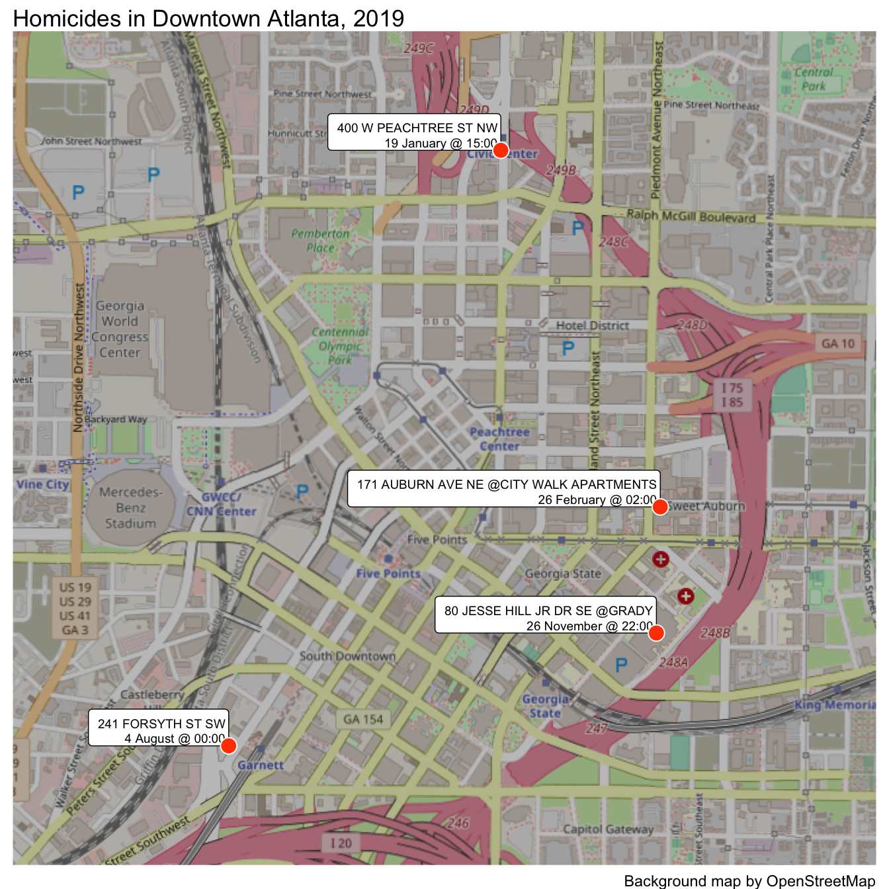
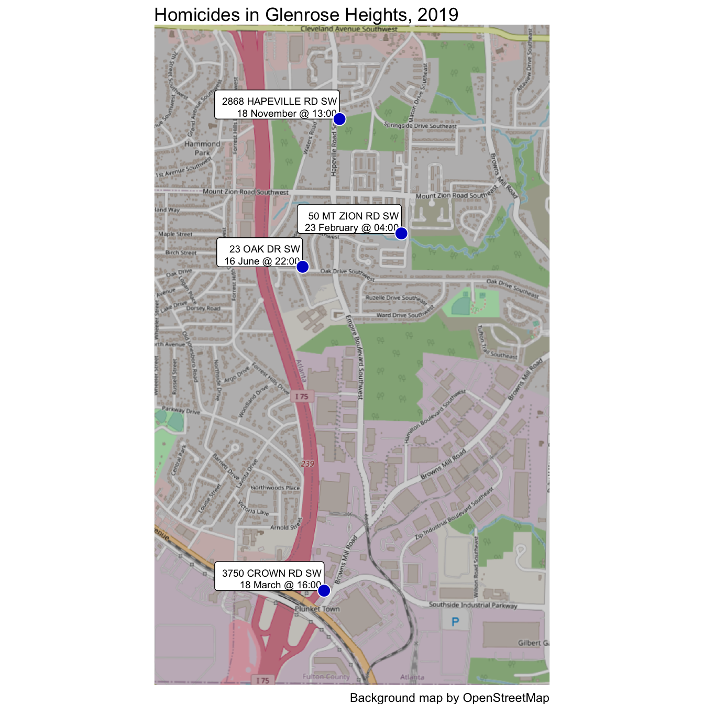

2 Your first crime map
Quickly walk (or jog) through the process of creating a complete crime map in R.
To load the interactive tutorial for this chapter, copy and paste the following code into the RStudio console:
and press Enter.
2.1 Introduction
In this tutorial we will use R to produce a simple crime map. To do this we will skip over lots of the detail of how R works and what choices we should make in creating maps. We will return to all these details in future sessions, so for-now please don’t worry about understanding every single line of code. Everything will become clear as we work through the tutorials in this course.
The map we’re going to create shows the locations of four homicides in downtown Atlanta in 2019:
To start off with, watch this video that walks through the code needed to make this map. Don’t worry if there are things in the video that you don’t understand – the rest of this tutorial will explain each line of code in turn.
2.1.1 Running code in this tutorial
In the video above you saw code being run in RStudio, but to save switching between this tutorial and the RStudio console, the rest of this tutorial includes short chunks of R code that you can run directly in this window. We will use these chunks of code to walk through the code we need to produce a map. To run the code in each chunk, just click the Run Code button in the top-right corner of each chunk. If you want to re-run a chunk of code, you can click the Start Over button in the top-left corner of each chunk.
When you click Run Code, the output of the chunk will appear below it (there may be a delay of a few seconds for more-complicated chunks).
To try out using a code chunk, click Run Code below – you should see the message ‘Hello, world!’ printed below the box.
message() is a function – a piece of R code that does something. The thing that the messages() function does is simple: it prints a message on the screen.
Now click Continue below to start this tutorial.
2.2 Loading crime data
2.2.1 Loading packages
Before we can work with our data, we first load packages of functions for use in the analysis. To load these packages, click Run Code. This will produce various messages, all of which you can safely ignore for now.
Before we can work with our data, we first load packages of functions for use in the analysis. Loading packages will produce various messages, all of which you can safely ignore for now.
Linking to GEOS 3.11.0, GDAL 3.5.3, PROJ 9.1.0; sf_use_s2() is TRUEWhat do these messages mean?
For now you don’t need to worry about these messages, but if you really want to know what they mean …
Some R packages make use of other apps and utilities on your computer. For example, the sf package makes use of a piece of software call GDAL that is used for managing spatial data. So that you know which version of GDAL is being used, sf prints a message telling you.
The tidyverse package itself loads several packages that are commonly used together for analysing data. When you load tidyverse, it will print a message telling you which packages it has loaded, along with the version number for each package. It also prints a message saying if any functions from the tidyverse packages have replaced (“masked”) any functions from packages that were previously loaded.
In general, R packages use start-up messages to remind you of information that is not likely to be critical to your work, but which it might be useful to know at some point in the future.
2.2.2 Loading data
The first task in creating any crime map is to obtain the crime and other data necessary. In many cases preparing the data for analysis and mapping will be a substantial task, but in this case we are going to use some pre-prepared crime data together with a pre-drawn street map (which we will ask R to download automatically when it draws the final map).
The data we will use will be records of homicides in the Downtown neighbourhood of Atlanta, Georgia, in 2019. We can load the homicide data using the read_csv() function.
Click the Run Code button to load the data.
# Download the data directly from a URL and store it as an object
homicides <- read_csv("https://mpjashby.github.io/crimemappingdata/downtown_homicides.csv")Rows: 4 Columns: 4
── Column specification ────────────────────────────────────────────────────────
Delimiter: ","
chr (1): label
dbl (3): report_number, longitude, latitude
ℹ Use `spec()` to retrieve the full column specification for this data.
ℹ Specify the column types or set `show_col_types = FALSE` to quiet this message.The read_csv() function loads data from a file and prints a message showing the name of each column in the data and the type of data (number, text etc.) in each column. Again, you can ignore this message for now.
Sometimes R has several functions that have similar names but do different things. That means it is very important to pay attention to which function you need in any particular set of circumstances. In this case we are using the read_csv() function, which does a slightly different thing from the similarly named read.csv() function (note the . instead of the _). Since read.csv() has several limitations that read_csv() does not have, we will always use read_csv() in this course.
We have stored the results of the read_csv() function in an R object called homicides. An object in R is anything that stores any type of data. There are many types of objects, but for this tutorial we don’t need to explore these in any more detail. All you need to remember for now is that objects store data and functions do things.
2.2.3 Viewing the data
To check the data has been loaded correctly, we can view the loaded data using the head() function. By default, head() prints the first six rows of the data stored in an object.
Click Run Code to view the data.
# A tibble: 4 × 4
report_number label longitude latitude
<dbl> <chr> <dbl> <dbl>
1 190191530 "400 W PEACHTREE ST NW\n19 January @ 15:00" -84.4 33.8
2 190570315 "171 AUBURN AVE NE @CITY WALK APARTMENTS\n26… -84.4 33.8
3 192160018 "241 FORSYTH ST SW\n 4 August @ 00:00" -84.4 33.7
4 193302338 "80 JESSE HILL JR DR SE @GRADY\n26 November … -84.4 33.8The data contain four columns: a unique identifier for a homicide, a label describing when and where that homicide occurred, and the longitude and latitude of the homicide location. Depending on the width of your screen, you may need to click on the ‘▸’ symbol to view all the columns in the data. We can use this data to plot the homicides on a map.
In the code head(homicides), there are no quote marks around the word homicides.
Almost all programming languages will interpret words differently depending on whether they have quotes around them or not. In this case, if you type the code head(homicides) then R will print the first few rows of the data stored in the homicides object.
On the other hand, if you type the code head("homicides") or head('homicides'), R will interpret this as an instruction to print the first few elements of the literal text ‘homicides’. Since the text ‘homicides’ contains only one element (more about that later), head("homicides") will just print the word ‘homicides’.
2.3 Processing the data
Before we can plot the data on a map, we have to complete some pre-processing steps. Having to process data before being able to analyse or visualise it is common in all types of data analysis, but spatial analysis often involves additional processing that takes account of the special features of spatial data.
2.3.1 Converting the data into a spatial format
Two data-processing tasks are needed to produce this map. The first is to convert the data into a simple features or SF object, which is a special type of R object that can be used by functions that process spatial data. We will cover the details of the st_as_sf() function that converts our data into into an SF object later on.
Click Run Code to convert the data into SF format.
When you run this code, it looks like nothing happened. This is because the results of the code are stored in the homicides_sf object. Do you remember what R code to use to view the first few rows of this object?
Type that code into the box below and click Run Code to view the data.
If you cannot remember how to view the contents of an object, you can click on the Solution button to get help.
As you go through these tutorials, try to avoid using the Solution button unless you have tried to input the correct code yourself. You will learn much more if you try to work out the answer by referring back to an earlier page in the tutorial or to your own notes.
Don’t worry about getting the answer wrong – nothing bad will happen if you run the wrong code in this tutorial and you can have as many attempts as you like to get the answer right.
# To view an object in R, use the `head()` function. To view the contents of the
# homicides object, use this code:
head(homicides_sf)Simple feature collection with 4 features and 2 fields
Geometry type: POINT
Dimension: XY
Bounding box: xmin: -84.39732 ymin: 33.74827 xmax: -84.38185 ymax: 33.76614
Geodetic CRS: WGS 84
# A tibble: 4 × 3
report_number label geometry
<dbl> <chr> <POINT [°]>
1 190191530 "400 W PEACHTREE ST NW\n19 January @ … (-84.3876 33.76614)
2 190570315 "171 AUBURN AVE NE @CITY WALK APARTME… (-84.38185 33.75546)
3 192160018 "241 FORSYTH ST SW\n 4 August @ 00:00" (-84.39732 33.74827)
4 193302338 "80 JESSE HILL JR DR SE @GRADY\n26 No… (-84.38198 33.75168)The data looks identical to before running the function st_as_sf(), except that the two columns called longitude and latitude have disappeared and there is now an extra column called geometry. The geometry column is important because lots of functions in R can recognise that the geometry column represents a location on the surface of the earth that can be used to analyse and map data in space.
2.3.2 Changing the data projection
The geometry column in the homicides_sf object represents locations on the surface of the earth using co-ordinates (pairs of numbers). In this case, the co-ordinates are expressed as longitudes and latitudes, but there are lots of other types of co-ordinates (known as co-ordinate reference systems).
We’ll learn more about co-ordinate reference systems in a future tutorial, but for now it’s enough to know that each different system has advantages and disadvantages. To make the homicide locations easier to add to a map, we are going to first transform the co-ordinates from longitudes and latitudes to a co-ordinate reference system that is specifically designed for mapping data for the US state of Georgia.
To do this, we will use the st_transform() function, together with a code representing the co-ordinate reference system we want to use (you don’t need to understand this code at this stage).
Simple feature collection with 4 features and 2 fields
Geometry type: POINT
Dimension: XY
Bounding box: xmin: 678630.6 ymin: 415608.5 xmax: 680065.5 ymax: 417588.4
Projected CRS: NAD83 / Georgia West
# A tibble: 4 × 3
report_number label geometry
<dbl> <chr> <POINT [m]>
1 190191530 "400 W PEACHTREE ST NW\n19 January @ … (679535.4 417588.4)
2 190570315 "171 AUBURN AVE NE @CITY WALK APARTME… (680065.5 416402.8)
3 192160018 "241 FORSYTH ST SW\n 4 August @ 00:00" (678630.6 415608.5)
4 193302338 "80 JESSE HILL JR DR SE @GRADY\n26 No… (680052.6 415983.6)Again, the data looks almost identical, except that the values in the geometry column have changed (you don’t need to understand yet the details of how these numbers are different). Now that we’ve completed the data processing, we can go on to produce the map itself.
2.4 Draw the map
We are now ready to produce our map of homicides in downtown Atlanta. So that people viewing the map will understand where the homicides occurred, we will plot the homicides on top of a base layer showing streets, parks and other geographic features obtained from an online web mapping service.
Click Run Code to create the map.
ggplot(homicides_sf_trans) +
annotation_map_tile(type = "osm", zoom = 15, progress = "none") +
geom_sf_label(
aes(label = label),
lineheight = 1,
size = 2.5,
hjust = 1,
vjust = 0
) +
geom_sf(colour = "white", fill = "orangered1", size = 4, shape = 21) +
scale_x_continuous(expand = expansion(mult = 0.5)) +
scale_y_continuous(expand = expansion(mult = 0.2)) +
labs(
title = "Homicides in Downtown Atlanta, 2019",
caption = "Background map by OpenStreetMap"
) +
theme_void()
You can change the appearance of the map by changing various parts of the code above. For example, you could change the colour of the points that mark the homicides by changing the code fill = "orangered1" to fill = "mediumblue", or change the base map to a different style by changing the code type = "osm" to type = "cartolight".
Each time you change part of the code, click Run Code to see what changes on the map.
Once you have finished experimenting with changing the appearance of the map, click Next Topic below.
2.5 Putting the code together
Now we have walked through the different parts of the code, we can create a map from scratch in a single block of code. In this example, we will map homicides from in Glenrose Heights neighbourhood of Atlanta, and a different style of base map. Since the area covered by the map is derived from the data itself, the extent of the map will update automatically.
# Load the R packages we need to analyse this data
library(ggspatial)
library(sf)
library(tidyverse)
# Download the data directly from a URL and store it as an object
homicides <- read_csv("https://mpjashby.github.io/crimemappingdata/glenrose_heights_homicides.csv")
# Convert the data to a simple features object, which we can use in functions
# that work on spatial data
homicides_sf <- st_as_sf(
homicides,
coords = c("longitude", "latitude"),
crs = "EPSG:4326"
)
# Transform the data to a co-ordinate reference system for the state of Georgia
homicides_sf_trans <- st_transform(homicides_sf, "EPSG:26967")
# Plot the map
ggplot(homicides_sf_trans) +
annotation_map_tile(type = "osm", zoom = 15, progress = "none") +
geom_sf_label(
aes(label = label),
lineheight = 1,
size = 2.5,
hjust = 1,
vjust = 0
) +
geom_sf(colour = "white", fill = "mediumblue", size = 4, shape = 21) +
scale_x_continuous(expand = expansion(mult = 1.5)) +
scale_y_continuous(expand = expansion(mult = 0.2)) +
labs(
title = "Homicides in Glenrose Heights, 2019",
caption = "Background map by OpenStreetMap"
) +
theme_void()
2.6 In summary
Well done – you have finished your first mapping tutorial. You may not have understood every line of code in this tutorial, but we will cover them all in more detail over the rest of this course. By the end of the tutorials, you will be able to write code like this to create many different types of crime map.
In this tutorial you have learned how to load data into R, prepare it for use in making a map and then used it to make your first crime map of this course.
The map we have produced in this tutorial is effective for showing the locations of just a few crimes, but is too limited to show more complicated patterns or larger datasets. In the following tutorials, we will learn how to produce more sophisticated maps and spatial analysis. We will also learn how each of the functions that we have used in this tutorial work.